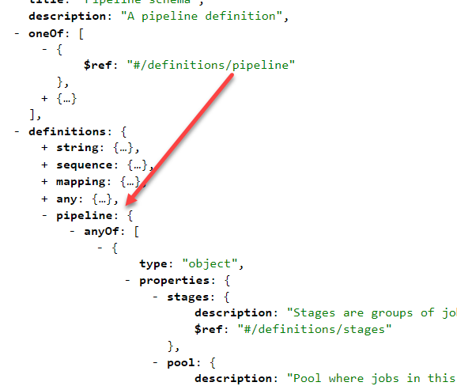

當要驗證 JSON 資料格式是否正確，有幾種做法
- 丟給後端去驗證
- 寫個 JSON Schema 做驗證(前端就可以先檢查了)
JSON Schema 是什麼？他有點像以前 XSD (用來描述 XML 結構的檔案，也有驗證的效果)，除了可以用來驗證 JSON 資料格式是否正確，也可以用來驗證 YAML 檔案的格式。
基本語法
所以如何寫一個 JSON Schema，我們需要寫另外一份 JSON 來描述未來想要驗證的 JSON 資料格式為何，型態為何，可以輸入得資料有哪些等，下面就跟大家一起整理相關的語法筆記 (部分範例來自 JSON Schema 網站，連結在參考資料)
假設有一個 JSON 資料長這樣
1 | { |
一個基本的 JSON schema 長這樣
1 | { |
- keyword
$schema: 參考的 JSON schema 是哪一個版本$id: 這份 JSON schema 存放的位置
- annotation
title，description描述說明此份 schema 的用途
- validation keyword
type: 資料格式型態，可以描述的型態有null、boolean、object、array、number、string、integer
上面是設定跟說明這份 schema 的用途，類似 metadata，至於如何描述資料結構，描述方法如下
1 | { |
- validation keyword
properties用來描述此Object內有哪些欄位required用來設定哪些欄位是必填的
更多語法
1 | "price": { |
- 數字型別
- 不能是 0 (用
exclusiveMinimum規則排除)
1 | "tags": { |
- 此為陣列型別的欄位
- 陣列 內得資料格式，使用
items定義 - 至少要有一筆資料 (
minItems來設定最少筆數) - 且不能重複 (
uniqueItems檢查)
Nesting data structures
不難，一樣式套用上面的規則，做法是一樣的
1 | "dimensions": { |
References schema
1 | "warehouseLocation": { |
-
$ref指定 schema 的參考路徑，可以是外部或內部 (spec)-
外部參考: 使用 URI Reference
-
內部參考: 使用
#/路徑的方式，搭配$defs使用
-
進階語法
additionalProperties: 是否有其他額外的欄位，false時，JSON 得資料必須符合 schema 所定義的propertiespatternProperties: 用 Regex 來描述 Property 名稱規則及對應得資料格式oneOf符合定義規則的其中一項- MUST be a non-empty array. Each item of the array MUST be a valid JSON Schema.
- An instance validates successfully against this keyword if it validates successfully against exactly one schema defined by this keyword’s value.
$defs搭配$ref使用 (舊版名稱為:definitions)- MUST be an object. Each member value of this object MUST be a valid JSON Schema.
- reserves a location for schema authors to inline re-usable JSON Schemas into a more general schema.
enum: 設定可以使用的值有哪些- MUST be an array and at least one element.
- An instance validates successfully against this keyword if its value is equal to one of the elements in this keyword’s array value.
pattern: 使用 Regex 設定可以輸入資料的格式 (format)
完整範例
1 | { |
想要知道更多 JSON Schema 語法的寫法，可以到 JSON Schema Store 內去瞭解，裡面列出很多現在常用的服務，很多都是用來驗證 YAML 格式是否正確，或是閱讀這篇文件